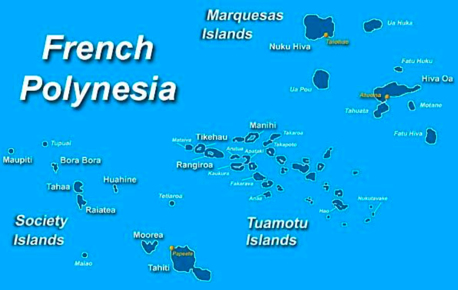
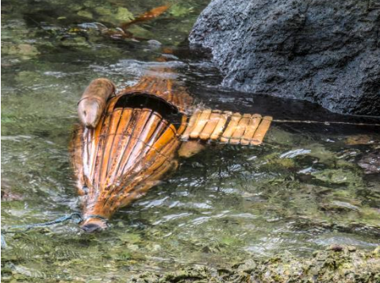
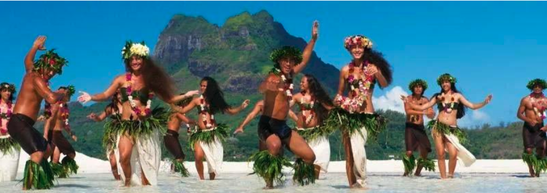
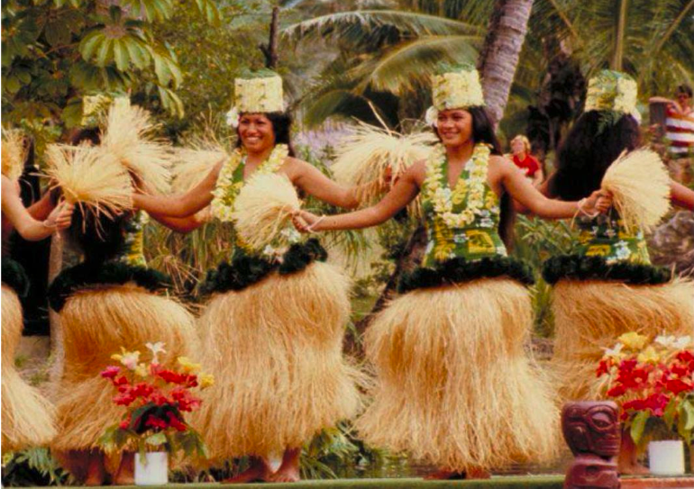
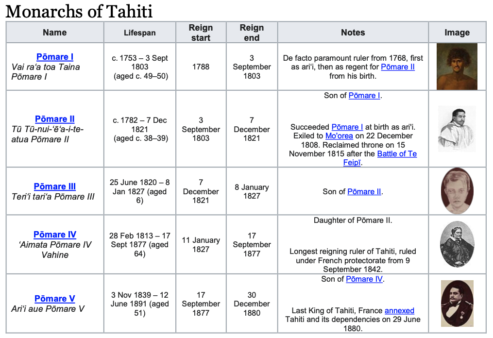
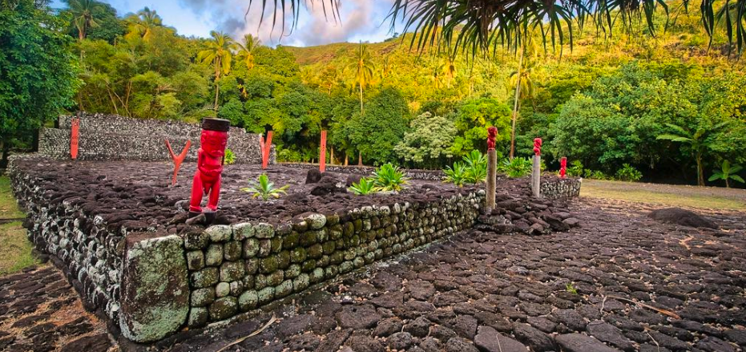
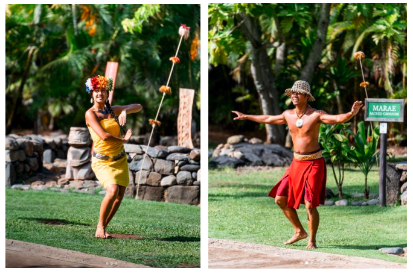

Greeting Word: Ia Orana
Current Population: 180,000-Tahiti (280,000- French Polynesia)
Location: Tahiti is located approximately 2,700 miles (4,350 km) southeast of Hawaii or about half-way between South America and Australia.
Size: The combined land mass covers about 1,400 square miles (13,660 km²)
The island of Tahiti, administrative center of French Polynesia, often represents all of the 116 surrounding tropical high rise islands and atolls in the Society Islands, Austral Islands, Tuamotus, Gambier and Marquesas Islands.
Known: French Polynesia
Fact: Tahitian craftsmen sometimes bury newly carved wooden drumsticks in mud for several years before using them to assure just the right degree of hardness and proper tuning.
Welcome to the Island of Tahiti. Tahiti is just part of one of five island groups (the Society Islands, the Marquesas Islands, the Austral Islands, the Tuamoutu Islands, and the Gambier Islands) that make up the nation of French Polynesia which consists of a total of 116 islands. These islands are spread out over an ocean area as large as the continent of Europe. French Polynesia is a semi-autonomous overseas territory of France, with its own president, parliament and laws. France's influence is limited to subsidies, education and security.
The first European discoverer of Tahiti was Captain Samuel Wallis of the British Royal Navy in 1767, although Tahiti didn’t become very well-known in Europe until Wallis was followed by French Navigator Count Louis de Bougainville (1768) who published Voyage autour du monde. In his book, Bougainville described the island as an earthly paradise where men and women live happily in innocence, away from the corruption of civilization.
The Tahitian population went into a period of decline in the 19th Century due largely to the introduction of new diseases by Europeans to which the Tahitians had no natural immunity. In this century, however, the Tahitian population has grown at a steady upward rate. The current population of all of French Polynesia is about 280,000, with 180,000 living on the island of Tahiti. An interesting statistic from French Polynesian today is that more than half of the population is under the age of 20. The approximate racial breakdown of the Tahitian population is 70% Polynesian, 12% European, 10% Polynesian/European, 5% Chinese, and 3% Polynesian/Chinese. All are French citizens.
The first inhabitants of this area are believed to have arrived about in the islands around 830 A.D. Tahitians remained isolated until the late 18th century when the British and French entered into a long series of political maneuvers which lasted over 50 years. Finally, by 1842, the French were in full control, although formal French rule had to wait until 1880, with the abdication of King Pomare V in favor of French rule. On July 14, 1977, France granted Tahiti the right to be self-governing. Tahitians have been French citizens since 1946 and speak the official languages, French and Tahitian.
The primary resources of Tahiti, besides the key industry of tourism, are the products of the coconut such as copra which is sun dried coconut meat, and refined coconut oil known as monoi which is used as skin care and suntan lotion. Secondary resources include mother of pearl shells, cultured pearls, fish, vanilla and more recently, the cultivation of the noni fruit for its health and nutritional properties.
FARE TAUTAI:
Fisherman’s Hut
A Tahitian family which lived near the sea would most probably have had a fishing hut made out of bamboo lashed together. The roof is covered with bundled coconut leaves or with sugar cane leaves. This hut would contain minimal furnishings. Sometimes it may have a bed, fish traps hanging from special hooks, a bench or other types of seating, fishing poles, gourds used as containers, nets, ropes and other equipment needed to catch fish efficiently.
Tahitian fish traps were not actually used to trap fish but to store them. The fish were caught first whether by a’ira (line) or upe’a (net) and then placed inside the bamboo trap or ha’ape’e. The door was then closed and the whole trap placed in the water and kept halfway afloat using floats attached on either side. Floats were carved out of burau (balsa) or wild hibiscus wood.
Thus the fish are kept alive so whenever fresh fish is needed, they are readily available in the bamboo trap. Each night the fisherman brings all his nets, nape or taura (ropes), auri patia i’a (fishing spears), traps, and other equipment inside his shed for repair and safekeeping.
The next morning, he is ready to start a new day of tai’a or fishing. From small sheds such as this, fishermen wait for the right time to go fishing, while contemplating the beauty of their islands, or chatting with a friend, or watching over their pearl crop.
Diving for mother pearls, an ancient and high risk method practiced by the people of the Tuamotu to obtain, on rare occasions, a black pearl from a mother pearl, has quickly become a thing of the past since the introduction of black pearl farming by Japanese experts in the late 70's.
With the aid of modern technology and a new method of farming the mother pearl, this dying source of industry was quickly revived as the black pearl business began to boom throughout the Tuamotu islands.
Fortunately, due to the lack of pollution in Tahitian waters and the perfect temperature of the blue lagoons, the black pearls have since then been considered to be the most beautiful poe rava or black pearls in the world. As such, it has rapidly ranked as one of French Polynesia’s highest resource of industry, second only to tourism.
FARE HEIVA:
Place of Celebration
This tahua orira’a or traditional dance platform is elevated for better viewing of the special daily programs which take place here. The songs and dances of Tahiti which you will see here will be performed in their native language. All Tahitians also speak French which is taught to them once they enter school. The tradition of entertainment in Tahiti once centered on a special guild of traveling performers called the arioi. They sailed on great double canoes from bay to bay and island to island performing dance, pantomime dramas, and chants honoring the god Oro, deity of peace, agriculture and fertility.
The Tahitian islanders in this village will demonstrate the pa’oti and tamure, the graceful yet energetic hip-shaking dance which young and old perform throughout the islands. One of the most widely recognized images of the islands is the world famous Tahitian tamure, often confused with Hawaiian Hula. This dance, easily recognized by its "fast hip-shaking," and "grass skirts" (see below for actual material used to make these skirts) is often confused with the Hawaiian Hula, a generally slower dance which focuses more on the hands and story telling than the hips.
The compelling rhythm of the dance is provided by the to’ere or a horizontal slit-gong wooden drum, and the fa’atete or upright wooden drum similar to the snare drum but covered with goat or shark skin. The pahu tupa’i, beaten by hands, and the tari parau beaten with drumsticks, are drums made from the cow hide or sharkskin.
Some of the dances or songs will feature the more modern instruments such as the guitar and a special version of the ukulele, popularly known as the Tahitian banjo, which have become vitally important to our music, since their introduction by European settlers.
Contrary to popular belief, Tahitian dancing skirts are not made of grass. Dancing skirts in Tahiti are made out of the inner fiber of the fau, or wild hibiscus tree. The women strip off the outer bark of the hibiscus and soak the remaining branches in water. They then strip off the inner bark and dry it in the sun. After the silky inner bark is dried, it is shredded into very narrow strips. The strips are bundled into small clumps and tied onto a waistband also made of the strips. Skirts worn by women for dancing can weigh as much as seven or eight pounds. The dancers find that the heavier the skirt, the better it sways when they move their hips in the fast- shaking
Tassels and shells are placed on the waistband for decoration as well as to accentuate the movement of the hips. In addition, the weighty waistband helps to weigh down the skirts to prevent them from slipping off during the aggressive dancing. Women’s skirts extend down to the ankles, while men’s skirts extend just below the knees. On festive occasions, dancers try to wear the most elaborately decorated dancing outfits.
When making shell leis many shells of the same size must be individually punched with a sharp rock to create small holes. The shells are then strung together in intricate methods. Anciently, sennit or purau (wild hibiscus fiber) was used to string the shells together. Today, modern nylon proves to be more durable.
FARE POTE’E or FARE ARI’I:
Chief’s Dwelling House
This chief’s dwelling represents the round-ended style of Tahitian architecture reserved usually for Chiefs and Nobles. The larger this type of house is, the higher the rank of the owner. The important furnishings would include many large finely woven mats, the noho ra’a or four-legged wooden seats for high ranking individuals, the turu’a or wooden headrest, and an elevated bed.
There were 3 parts to a chiefly bed: first a layer of dried banana leaves, secondly a layer of mats piled on top of one another for softness, and thirdly a coverlet or blanket which originally were made of woven lauhala leaves. Today, quilts are favored because they are easier to maintain.
Other personal effects which might be found in a noble dwelling include costumes, small boxes of highly valued red feathers, drums, flowers, and tiki carvings. Tikis are designed and placed to ward off evil spirits. The largest tikis are usually located on the marae or temple enclosures.
The wives of the early Christian missionaries in Tahiti taught Tahitian women the art of quilting which is called tifaifai. Tahitian quilting differs from the Hawaiian version in that they do not pad their quilts with batting, nor do they sew the three layers together. Their quilts have only an applique or pieced- together front which is backed with a complimentary backing.
The design of Tahitian quilts also differs from Hawaiian quilts in that Tahitians favor either large boldly- colored overall designs which they applique, or piece together intricate patchwork designs using tiny cutouts of colored cloth. On very special occasions of celebration, the treasured quilts they have carefully stored are brought out and displayed for all to enjoy.
MARAE:
Ancient Temple
Anciently, the Marae were built specifically for High Chiefs as a symbol of their power and authority. Coronations & other important events such as war councils, peace treaties, victory celebrations and voyage preparations, took place there. The Marae was usually a large rectangular area surrounded by a stone wall, and guarded by tikis to discourage entries by the uninvited.
These human like figures carved in basalt, volcanic tuff, or wood are usually found near a marae or other holy places. Experts believe tikis had religious significance and symbolized Gods and/or deceased ancestors. Well preserved Tikis are found throughout Polynesia, particularly in the Marquesas Islands, the largest being 9 feet tall. A fear of evil or bad luck coming to individuals who disturb tikis may influence some natives. More likely, the hope that tikis should be protected so future generations can view them, explains the respect for tiki’s shown by most islanders.
Priest (Tahu’a)
The Priest or Tahu’a, was responsible for the clan’s sacred activities which include prayers, and other ceremonies that are often accompanied in ancient times with animal or human sacrifices in order to invoke favors from the Gods.
As an important member of the clan aristocracy, the Priest was assisted by lesser officiators called “Haere”, who recited oral traditions, and helped enforce the many “rahui” or tapu (taboos).
The Marae was decreed sacred and available only to Priests and Chiefs. The Altar, built with several layers of flat stones, is reserved as seating for the Priest and Royalty during ceremonies, and is therefore considered to be the most holy place on the Marae.
Since the European era, once a year, the opening ceremony of the Heiva Nui i Tahiti, considered to be one of the top-three worldwide Polynesian Cultural Events, takes place on the Marae Arahurahu, located on the western side of the Island of Tahiti, with the re-enactment of various stages of a Chief’s coronation ceremony. However, smaller Maraes were constructed by ancient Polynesian families or clans, to celebrate other sacred traditions.
The Polynesian Cultural Center is proud to present our very own Tahitian Marae built by and under the direction of Archeologist Mr. Joseph Tchong, (a native from Tahiti who has been actively engaged in the renovation of other significant Maraes throughout French Poynesia), and approved by the Minister of Cultures of French Polynesia who was officially represented by Mr. Heremoana Maamaatuaiahutapu, Director of the House of Culture and the Office of Tourism, in the groundbreaking and dedication of this marae for the common purpose of preserving & sharing with the world, Tahiti’s ancient & sacred traditions, such as the celebration of births, marriages & deaths, just to name a few.
This priceless work of art, gifted from “Te Fare Tauhiti Nui” and the “Association of Papenoo Marae Preservation” to the Polynesian Cultural Center, was built with 3,200 river stones that have been carefully handpicked one by one from the rivers deep in the beautiful valley of Papenoo Tahiti, and shipped here to Hawaii, a process that took nearly a year.
FARE TUTU:
Cooking Hut
This open structure is an example of a Tahitian cooking house. Each Tahitian family would have an outdoor kitchen like this located where the smoke would not interfere with the main house. Both men and women shared in the cooking chores. A man would typically gather the vegetables, hunt pigs and birds, fish in the deeper waters, and perform the more strenuous cooking chores. Women’s responsibilities include food preparation and assisting the men in making the underground oven.
The earth oven in Tahiti is called ahima’a which is prepared once a day around mid-morning. Several volcanic rocks are first heated in a roaring fire. When the rocks are glowing and red hot, the firewood debris is removed leaving the rocks for the actual cooking. A layer of banana stump fibers which have been pounded into a stringy mass is placed immediately on the hot rocks.
Next, the food to feed the family for a day is wrapped in a variety of leaves and placed on the banana fiber layer. Vegetables like breadfruit, taro, umara, ufi and green bananas are scraped and peeled and placed naturally on the rocks among the other food items.
The final layers consist of broad leaves, specially-woven mats made from the leaves of the wild hibiscus tree, or green banana leaves, or old mats, used to seal in the heat until the food is cooked. Traditionally, the dirt or sand dug from the pit is spaded on top of everything to ensure the best results.
NONI:
Indian Mulberry Tree
The Indian Mulberry, or Noni, as it is called in Hawaii and Tahiti, grows well on sandy or rocky shores. Apart from saline conditions, the plant also can withstand drought and grows in secondary soils. Thus the noni tree can be seen in clearings, volcanic terrain, lava-strewn coasts and on limestone outcrops.
- USE AS FOOD: The fruits are edible, but have a strong pungent smell and taste, so for the most part, they were eaten as a famine food. In some Pacific islands, like Raratonga & Kiribati, the fruit was used as a staple food of choice, where they were cooked into curries and stews. Elsewhere, the fruit is eaten raw with salt (Indochina, Australian Aborigines). The fruits may also be fed to pig livestock. The young leaves can also be eaten as a vegetable and contain protein (4-6%). Seeds may be roasted and eaten.
- OTHER USES: The bark of the noni produces a reddish purple and brown dye. In Hawaii, a yellowish dye was also extracted from the roots and also used to dye cloth. The tree was also purposely planted to provide support for pepper vines and shade tree or wind-breaker for coffee bushes.
- TRADITIONAL MEDICINAL USES:
- Polynesians used various parts of the noni for medicinal purposes, such as containing fever and as a tonic for upset stomach.
- Leaves, flowers, fruit and bark were used to treat eye problems, skin wounds and abscesses.
- The leaves were soaked and placed on the gums and teeth for toothaches and chewed to treat throat problems, respiratory ailments and constipation.
- Applying heated leaves to the chest was thought to help relieve coughs, nausea, colic, and congestion of the chest.
- In some areas of the Philippines, juice of the leaves is taken for arthritis.
- Pounded unripe fruit is mixed with salt and applied to cuts and broken bones.
- Ripe fruit is used to draw out pus from an infected boil.
- Noni has become a plant of much interest in recent years, as modern scientists researching its medicinal properties and possible health benefits. In a recent study by the College of Tropical Agriculture at the University of Hawaii at Mānoa, researchers found evidence that some noni properties can help to control diseases like diabetes and high blood pressure.
Terms:
Ahima’a – Traditional underground oven used in Tahiti for cooking daily meals.
Ari’i – Chief or noble; high-ranking individual in Tahitian society.
Copra – Dried coconut meat used to make coconut oil and other products.
Fare – Traditional Tahitian house made from bamboo and thatch.
Fare Heiva – House or platform used for dance, songs, and celebrations during the Heiva festival.
Fare Pote’e – Chief’s dwelling or meeting house, often round-ended and richly furnished.
Fare Tautai – Fisherman’s hut built near the sea, used to store nets, traps, and fishing gear.
Fare Tutu – Cooking hut or open kitchen used for preparing food with the ahima’a oven.
Fau – Wild hibiscus tree; its inner bark fibers are used to make Tahitian dance skirts and cords.
Fa’atete – Upright drum covered with goat or sharkskin, used to accompany dances.
Ha’ape’e – Bamboo fish trap used to keep fish alive in the water until needed.
Heiva – Annual festival celebrating Tahitian culture through dance, music, and traditional games.
Ia Orana – Tahitian greeting meaning “hello” or “may you live long.”
Monoi – Coconut oil infused with tiare flowers, used as skin lotion and hair oil.
Marae – Sacred temple enclosure used for religious ceremonies, coronations, and councils.
Nape – Fishing rope used by Tahitian fishermen.
Noni – Indian mulberry tree valued for its fruit, dyes, and traditional medicinal uses.
Pa’oti – Traditional Tahitian dance movement emphasizing hip motion.
Pahu – Horizontal wooden drum covered with sharkskin, providing rhythm for dances.
Poe Rava – Black pearl; one of Tahiti’s most valuable natural resources.
Purau – Another name for wild hibiscus; source of fiber for skirts and cords.
Rahui – Sacred restriction or prohibition enforced by chiefs and priests.
Tahu’a – Priest responsible for sacred rituals and ceremonies.
Tahua Orira’a – Traditional raised dance platform for performances.
Tamure – Famous Tahitian dance featuring rapid hip-shaking movements.
Tiare Tahiti – Gardenia flower; Tahiti’s national flower symbolizing purity and welcome.
Tiki – Carved humanlike figure representing gods or deified ancestors.
To’ere – Slit drum carved from hardwood, producing sharp rhythms for Tahitian music.
Turu’a – Wooden headrest used in traditional sleeping arrangements.
Upe’a – Fishing net used for catching fish before storing them in traps.